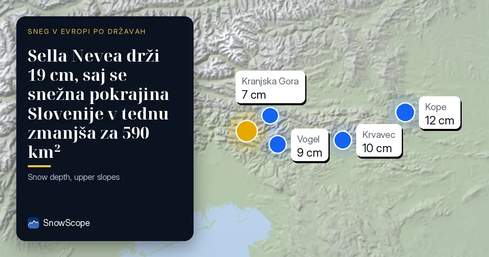
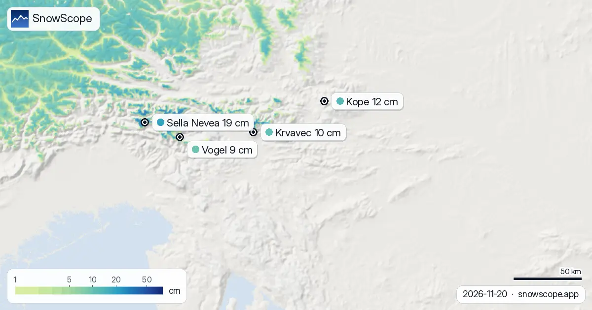
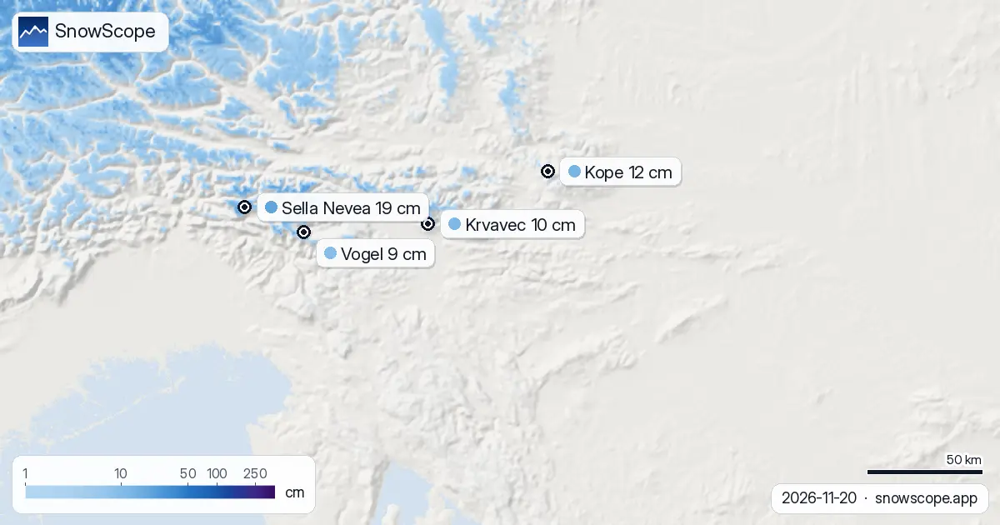

Sella Nevea drži 19 cm, saj se snežna pokrajina Slovenije v tednu zmanjša za 590 km²
Sella Nevea se nahaja na 2137 m nadmorske višine z 19 cm snega na 20. novembra, kar je trenutno najgloblja in najbolj stabilna lokacija v Sloveniji. Država je v preteklem tednu izgubila 590 km² snežne pokrajine—drastičen padec z 1190 km² pred sedmimi dnevi—saj se nižje ležeče nadmorske višine topijo.
Oglejte si snežno napoved za Sella Nevea v aplikaciji SnowScopeVišina snega, opozorila in 3D zemljevid, brezplačno.
En teden, 590 km² poti
Snežna pokrajina po Sloveniji se hitro manjša. 13. novembra je bilo 1190 km² modeliranega področja belega. Do 20. novembra je ostalo le še 600 km²—izguba 590 km² v sedmih dneh. Samo včeraj se je stopilo 160 km² snега, saj se je temperatura zraka dvignila. Država je sedaj pri le 8 odstotkih belega pokritja na splošno.
Ta vrsta umika ni neobična v novembru. Zgodnja sezonska sneg je tanka in leži nizko; nekaj toplih dni jo hitro izbriše. Julijske Alpe so se bolje odrezale kot nižja gorovja, ker zadržijo globino. Sella Nevea, najvišje smučarsko središče na 2137 m, je trenutni vodilec Slovenije z 19 cm. Kamniško-savinjske Alpe zadržujejo 46 cm z zadnjih 72 ur, čeprav so izmerjene globine na smučarskih centrih tam še vedno skromne.
| Day | White area | Most new snow in 3 days | Deepest resort |
|---|---|---|---|
| ponedeljek, 16. novembra | 1.130 km² | 1 cm | Gače |
| torek, 17. novembra | 490 km² | 2 cm | Velika planina |
| sreda, 18. novembra | 260 km² | 2 cm | Vogel |
| četrtek, 19. novembra | 760 km² | 30 cm | Sella Nevea |
| petek, 20. novembra | 600 km² | 29 cm | Sella Nevea |

Kjer se sneg še zadržuje
Sneg se sedaj drži le na visokem terenu. Nad 2000 m nadmorske višine je povprečna globina 22 cm in 100 odstotkov področja je pokrito. Med 1500 in 2000 m je 87 odstotkov belih s povprečjem 8 cm. Pod 1000 m skoraj ni več snega—snežna meja je na 1500 m nadmorske višine.
Julijskie Alpe so izjema: v preteklem 72 urah je tam padlo 54 cm, daleč nad povprečjem države 29 cm. Ta koncentriran sneg je zadržal globino in pokritje na visokem nivoju na tem gorovju. Izmerjenih 19 cm Sella Nevee odraža to prednost, smučarsko središče pa lahko pričakuje dodatnih 30 cm v naslednjih treh dneh, ko se premakne svež sistem.

Kaj model vidi preko nadmorskih višin
Naš snežni model ocenjuje naslednje globine po pasu nadmorske višine do 20. novembra. Od 500 do 1000 m: nič snega in nič pokritja. Od 1000 do 1500 m: nič povprečne globine, toda 7 odstotkov področja drži pegasto. Od 1500 do 2000 m: povprečje 8 cm z 87 odstotki pokritja. Nad 2000 m: povprečje 22 cm s polnim pokritjem.
To so ocene modela za vsak pas in se lahko razlikujejo glede na naklon terena, ekspozicijo in lokalni veter. Izmerjeni podatki postaj potvrjujejo, da najvišja smučarska središča drže najbolj zanesljiv sneg. Krvavec, na 1963 m, ima 10 cm in je napovedano pridobi 23 cm v naslednjih treh dneh. Vogel, na 1731 m, ima le 9 cm, toda leži v poti vhodnega sistema.
Sella Nevea vodi; Julijskie Alpe prevladujejo
Sella Nevea je danes najboljše mesto v Sloveniji z izmerjenih 19 cm na 20. novembra in 23 cm, ki je padlo v preteklem 72 urah. Smučarsko središče je dovolj visoko, da je izognilo najhujšemu taljenju. Napovedan je pridobek 30 cm v naslednjih treh dneh—daleč največji pridobek med slovenskimi smučarskimi centri.
Julijskie Alpe kot celota so v 72 urah prejele 54 cm snega, kar jih naredi najbolj snežno teren države. Ta gorska veriga se bo še naprej koristila, saj se napovedani sistem premika naprej. Krvavec, v drugem gorovju, bo pridobil 23 cm, kar ga naredi sekundarno tarčo. Pohorje, najmanjše in najtoplejše gorovje, je v 72 urah prejelo le 3 cm in bo ostalo tanko.
Naslednji trije dnevi: kje pada nov sneg
Slovenije je napovedan nov sneg do 18 cm v naslednjih treh dneh, z možnostjo 17 cm samo na 22. novembra. To je prva zajeten padavine za številna nizka področja. Najheavyest sneg bo ponovno koristil najviške vrhove in Julijske Alpe. Sella Nevea bo dobila 30 cm, Krvavec 23 cm, in Kranjska Gora 17 cm.
Nižja smučarska središča bodo videla manj koristi. Vogel bo pridobil 14 cm, Kope le 12 cm. Po 23. novembru se napoved oslabi: samo 4 cm se pričakuje v drugem tednu (28. november do 4. december), zato bo zgodnji december mirnejši. Okno za smučanje na svežem pokritju je sedaj do 23. novembra.
Kaj je treba opazovati naprej
Naslednjih sedem dni bo prineslo do 35 cm po državi, skoraj vse v prvi treh dneh. Po tem pada proizvodnja snega drastično. Smučarji, ki iščejo najboljše razmere, bi se morali osredotočiti na Julijske Alpe in Sella Neveo pred 23. novembrom.
Zgodnja sezonska sneg je pogosto tanka in morda ne prekriva celotnega terena. Skale in ovire blizu površine so pogoste na teh globinah. Preverite uradno plazno bulletin, preden greste izven piste. Uporabite aplikacijo SnowScope, da spremljate, kje se novo sneg v realnem času gradi.
Nasveti za smučarje
- Cilja Sella Neveo in Julijske Alpe v naslednjih 72 urah, medtem ko je sveži sneg na poti—30 cm je tam napovedano, daleč več kot drugod v Sloveniji.
- Ostanite nad 1500 m nadmorske višine: pod to nadmorsko višino je sneg pegast in nezanesljiv. Vse preostalo pokritje je v višjih pasovih.
- Sproti spremljajte napoved za 22. november: 17 cm se pričakuje samo tisti dan, vrhunec vhodnega sistema.
- Pričakujte tanko pokritje na številnih progah, še posebej izven piste. Zgodnja sezonska sneg pogosto leži plitko nad skalami. Pred odhodom z označenega terena se posvetujte z uradno plazno biltenom.
- Načrtujte obisk pred 23. novembrom. Po tem datumu padavine padejo na le 4 cm v naslednjem tednu.
About these numbers
Resort snow depths are the deepest snow on the resort's upper slopes from the SnowScope snow model (about 1 km, run of 20. novembra); they are estimates for an area, not a measurement at one point. Station values are measurements on the date shown. Forecasts can change. Always read the official avalanche bulletin before going off-piste.
Cite this report
For research, teaching or the press: the numbers and charts are free to reuse under CC BY 4.0 with this citation.
SnowScope (2026), Sella Nevea drži 19 cm, saj se snežna pokrajina Slovenije v tednu zmanjša za 590 km², https://snowscope.app/blog/sl/2026/11/slovenia-snow-cover-loss-this-week-20-november-2026.html, accessed 2026-11-20
SnowScope (Atlas Labs). (2026, November 20). Sella Nevea drži 19 cm, saj se snežna pokrajina Slovenije v tednu zmanjša za 590 km². SnowScope snow reports. https://snowscope.app/blog/sl/2026/11/slovenia-snow-cover-loss-this-week-20-november-2026.html
BibTeX
@misc{snowscope2026sloveniasnowcoverlossthi,
author = {{SnowScope (Atlas Labs)}},
title = {Sella Nevea drži 19 cm, saj se snežna pokrajina Slovenije v tednu zmanjša za 590 km²},
year = {2026},
month = nov,
howpublished = {\url{https://snowscope.app/blog/sl/2026/11/slovenia-snow-cover-loss-this-week-20-november-2026.html}},
note = {Published 2026-11-21 12:28 UTC; accessed 2026-11-20}
}· CC BY 4.0 · Methods, data and tools →
Sella Nevea: snow and temperature by height, this winter vs last (tools) →
Follow Sella Nevea
Brezplačno: sporočilo, ko prihaja novi sneg, in napoved vsako jutro.